내가 만든 부분
- 학생 화면 코드
student/extension.mjs: 화면 함수 8개(13~20단계) - 상태 요약 카드와 이번 실행 추이, 기록·패키지 요약 카드
- 「내 PC 측정 추이 비교」: 제공 조회 값을 다시 구현하지 않고 쌓아 직전 측정과 비교
- 「다시 조회」·대기 표시·조회 실패 항목과 다음 할 일 안내, 키보드 조작
- 앱 이름 「헤임달」과 화면 배치·색(꾸밈 파일), 실행 안내 한 장과 기록 문서
SKT ALEPH 방어전 · 13~22단계와 총공세
제로 트러스트 보안 Agent를 직접 설계하고 구현했습니다. 사용자·기기·세션 확인, 업무 앱 접근 판정, 보안 기록·XDR 경보, AI 연결 상태, 조치 상태, 설치 패키지 취약점 조회 화면을 만들어 ALEPH 판정 환경에서 13~22단계 코드 검토를 모두 통과했습니다. 이어진 총공세(판정 없는 개선 기간)에서는 내 PC를 실제로 읽어 직전 측정과 비교하는 기능을 더하고, 값을 Windows 기본 도구와 대조했습니다.
실제 화면 내 PC에서 실제로 실행·측정한 화면 예제 화면 예제 데이터(demo)로 켠 화면 · 실제 회사 연결 결과가 아님
student/extension.mjs: 화면 함수 8개(13~20단계)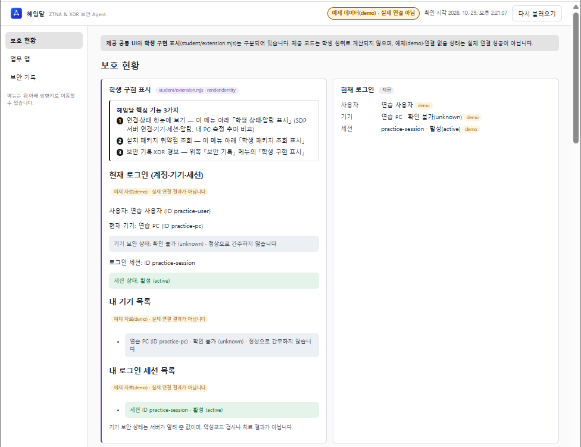
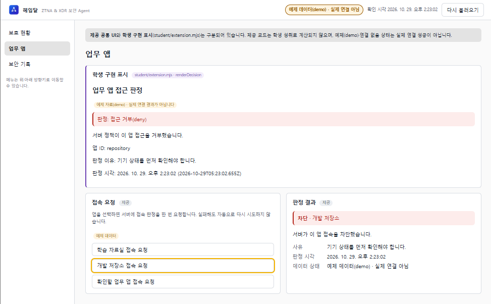
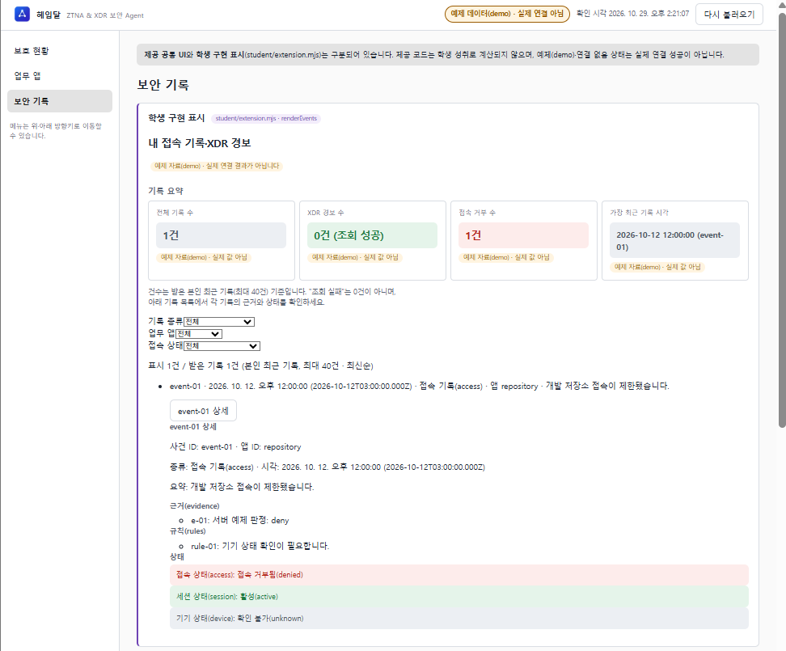
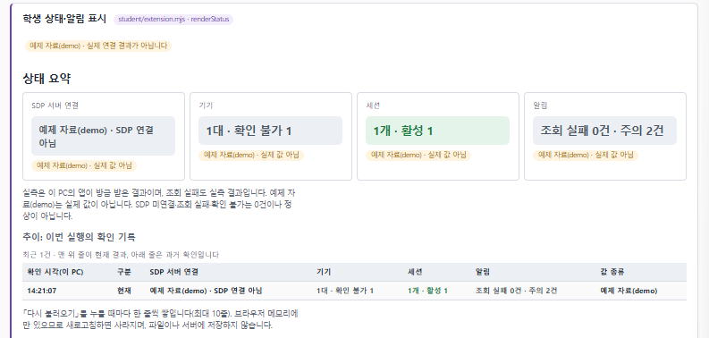
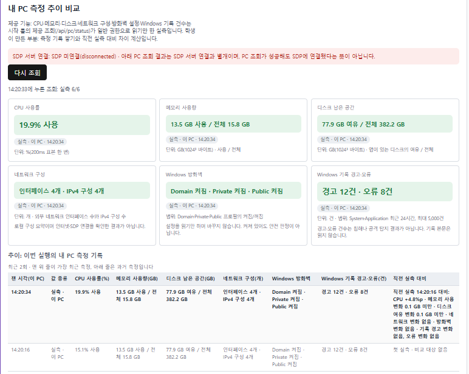
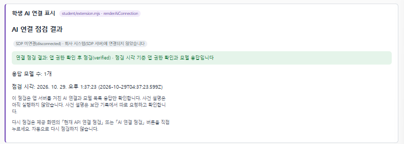
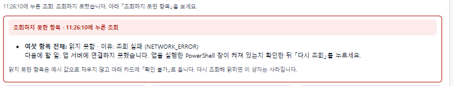
학생 PC(Windows, 일반 권한)에서 같은 시각대에 앱 값과 Windows 기본 도구를 비교했습니다(2026-10-28).
| 항목 | 헤임달 | Windows 도구 | 결과 |
|---|---|---|---|
| 메모리 | 10.1 GB / 15.8 GB | 작업 관리자 10.0/15.8 GB | 일치(측정 순간 차이) |
| 디스크 여유 | 91.5 GB / 382.2 GB | 파일 탐색기 C: 91.4GB / 382GB | 일치 |
| Windows 기록(24시간) | 경고 16 · 오류 9 | 이벤트 뷰어 경고 10+6 · 오류 5+4 | 일치 |
| 방화벽 | Domain·Private·Public 켜짐 | Windows 보안 세 네트워크 켜짐 | 일치 |
| CPU | 19.9% | 작업 관리자 5% | 순간 표본(200ms) 차이 |
ALEPH 판정 환경이 제출 커밋의 코드를 읽어 판정한 기록입니다. 코드를 실행하거나 회사 서버에 연결해 확인한 것은 아닙니다. 항목을 펼치면 포털의 판정 화면을 볼 수 있습니다.
394a0e5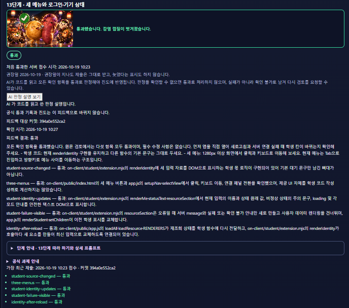
2667109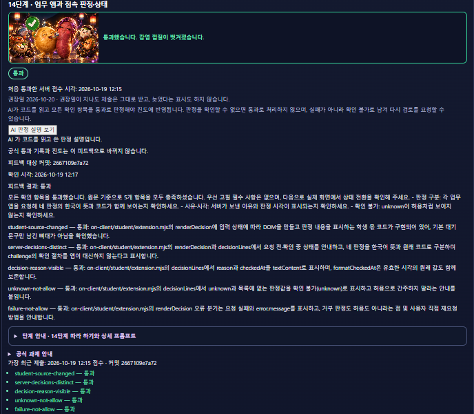
a1a25cb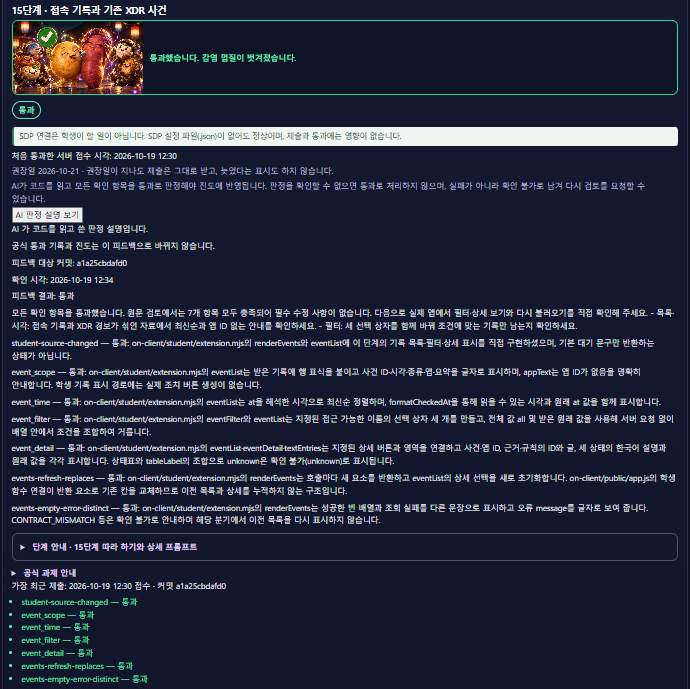
738cf16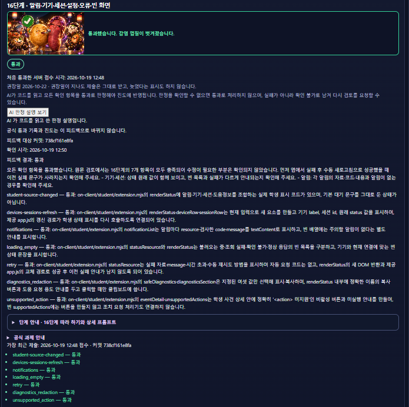
78bf089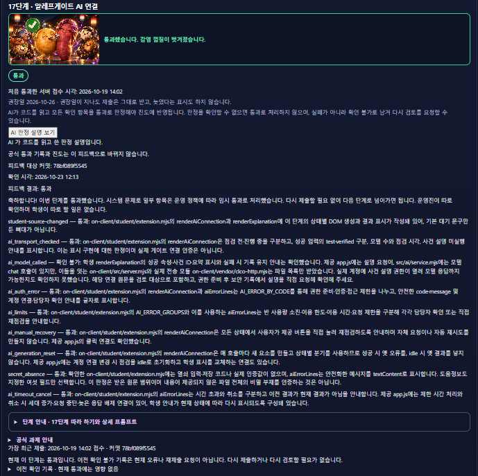
702adbe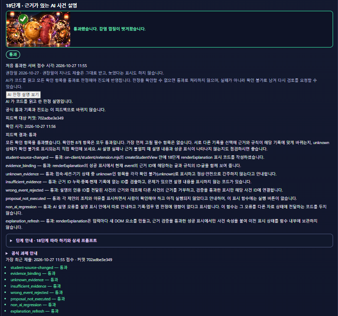
753f5e3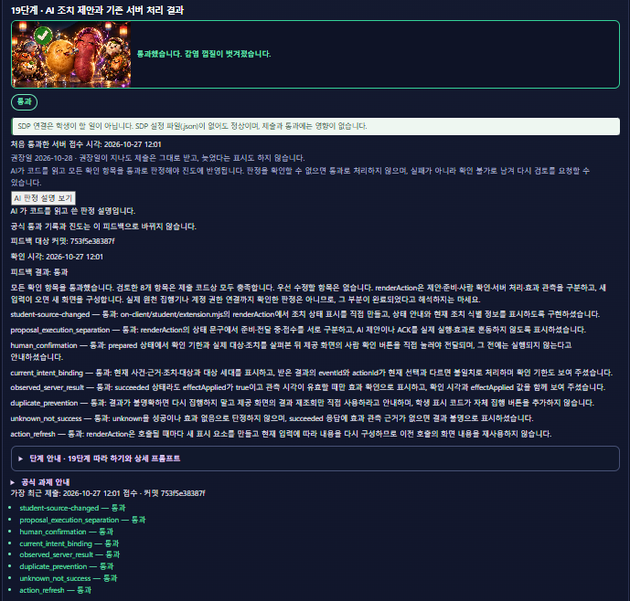
9b134a1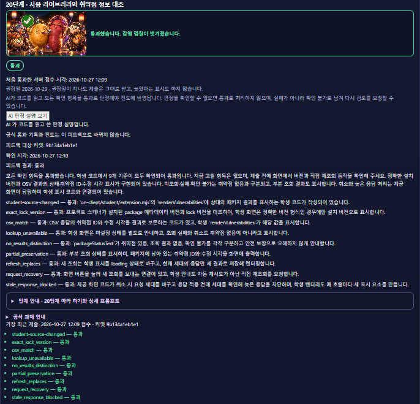
0a25836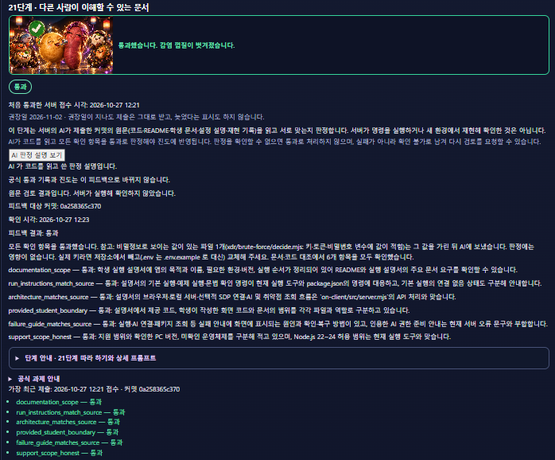
cc373c1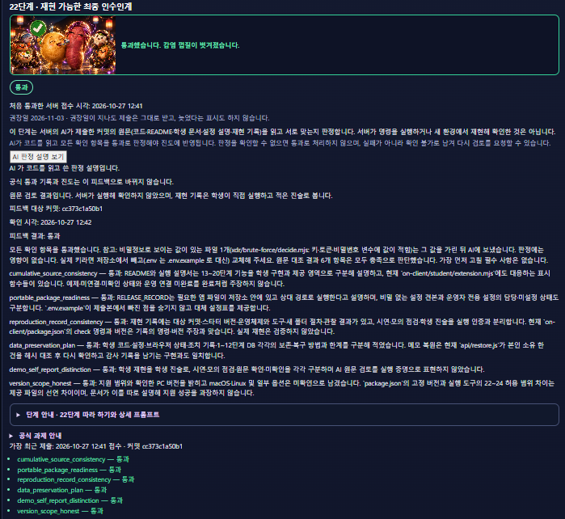
자세한 근거: 저장소의 완성 기록, 시연 순서·한계·근거, 실행 안내 한 장. 1~12단계(최부장 비밀 자료실: 서버 함수·판정기·탐지·복구)는 같은 저장소의 README에 정리했습니다.